Partieformular zu PGN
Fotografiere nach der Partie dein Partieformular: Kibitz liest die handgeschriebenen Züge in deiner Notation, prüft jeden Zug auf dem Brett und macht eine PGN daraus.
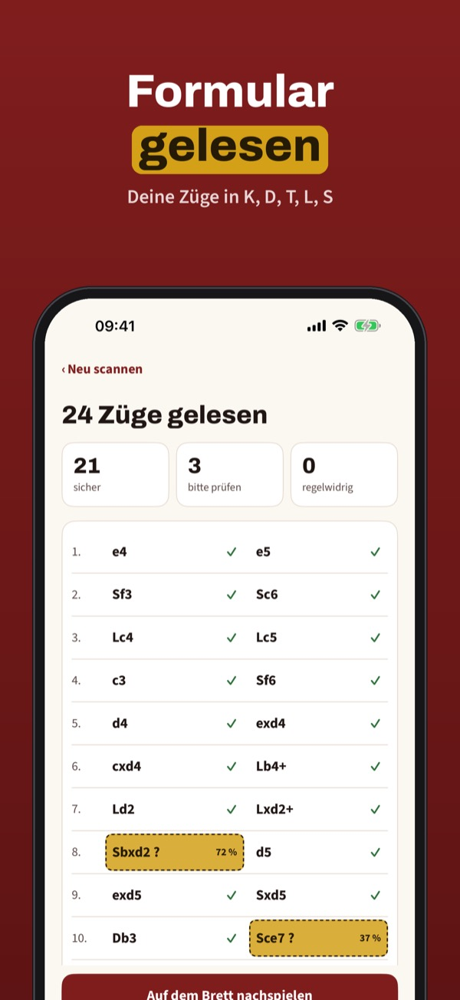
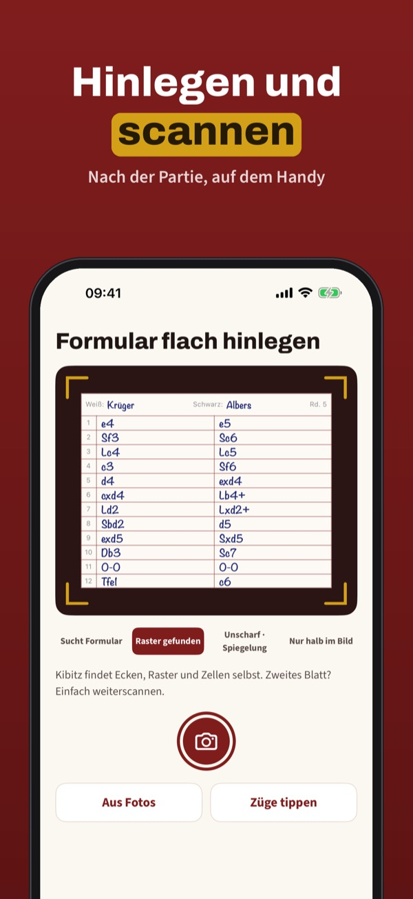
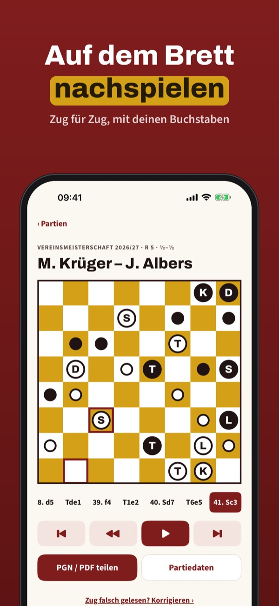
Kibitz erspart dir das Abtippen deiner Partien. Fotografiere nach der Partie das Formular, und Kibitz liest deine Züge auf dem Handy – mit K, D, T, L und S, so wie du schreibst.
Drei Formulare pro Monat lesen, prüfen, nachspielen und als PGN teilen geht ohne Kauf. Kibitz Plus ist ein Einmalkauf: unbegrenzt Formulare, Archiv, Turniere, Statistik und PDF. Kein Abo.
Kibitz ist für die Zeit nach der Partie gedacht und bietet keine Analyse und keine Zugvorschläge. Das Lesen von Handschrift kann Fehler machen – prüfe die markierten Züge.
Terms of Use (EULA): https://www.apple.com/legal/internet-services/itunes/dev/stdeula/
Privacy: https://apps.baytech.nl/kibitz-eu/
Notatieformulier naar PGN
Fotografeer na de partij je notatieformulier: Kibitz leest de handgeschreven zetten in jouw notatie, controleert elke zet op het bord en maakt er een PGN van.
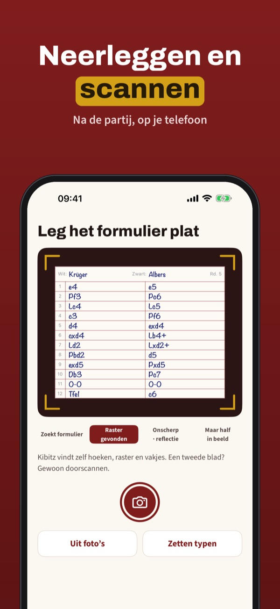
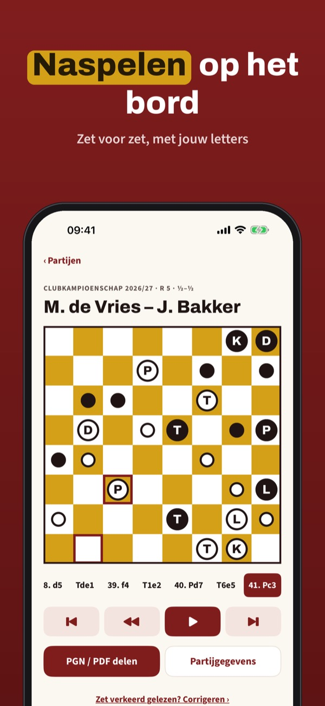
Kibitz bespaart je het overtikken van je partijen. Fotografeer na de partij het formulier, en Kibitz leest je zetten op je telefoon – met K, D, T, L en P, zoals jij schrijft.
Drie formulieren per maand lezen, controleren, naspelen en als PGN delen werkt zonder aankoop. Kibitz Plus is een eenmalige aankoop: onbeperkt formulieren, archief, toernooien, statistiek en pdf. Geen abonnement.
Kibitz is bedoeld voor na de partij en geeft geen analyse en geen zetsuggesties. Het lezen van handschrift kan fouten maken – controleer de gemarkeerde zetten.
Terms of Use (EULA): https://www.apple.com/legal/internet-services/itunes/dev/stdeula/
Privacy: https://apps.baytech.nl/kibitz-eu/
Vos coups d’échecs en PGN
Après la partie, photographiez votre feuille de notation : Kibitz lit les coups manuscrits dans votre notation, vérifie chaque coup sur l’échiquier et en fait un PGN.
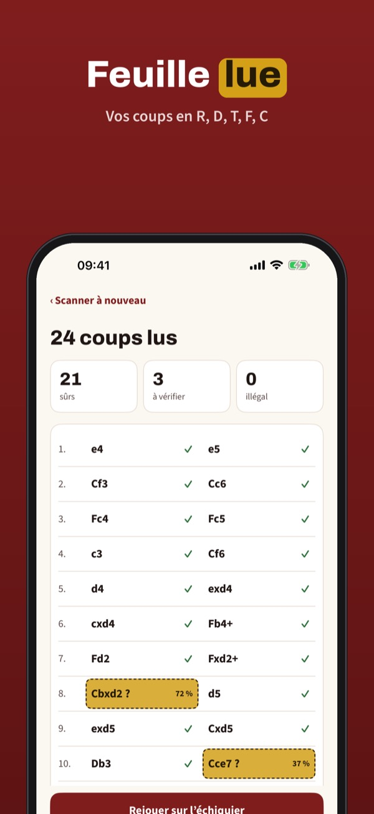
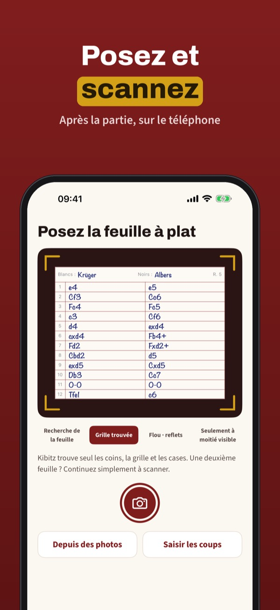
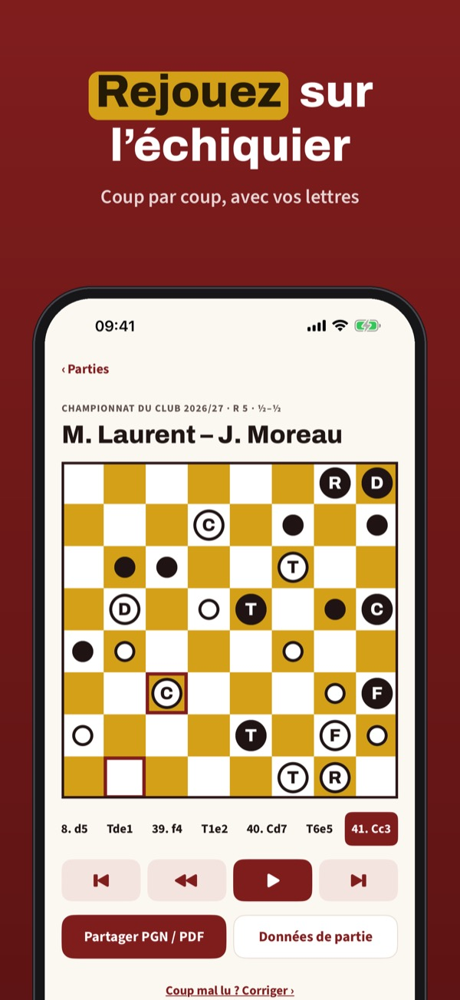
Kibitz vous évite de recopier vos parties. Après la partie, photographiez la feuille, et Kibitz lit vos coups sur le téléphone – avec R, D, T, F et C, comme vous les écrivez.
Trois feuilles par mois avec lecture, vérification, rejeu et partage PGN s’utilisent sans achat. Kibitz Plus est un achat unique : feuilles illimitées, archives, tournois, statistiques et PDF. Sans abonnement.
Kibitz est conçu pour l’après-partie et ne propose ni analyse ni suggestion de coups. La lecture de l’écriture peut se tromper : vérifiez les coups signalés.
Terms of Use (EULA): https://www.apple.com/legal/internet-services/itunes/dev/stdeula/
Privacy: https://apps.baytech.nl/kibitz-eu/
Tu partida escrita, en PGN
Después de la partida, fotografía tu planilla: Kibitz lee las jugadas escritas a mano en tu notación, comprueba cada jugada en el tablero y crea un PGN.
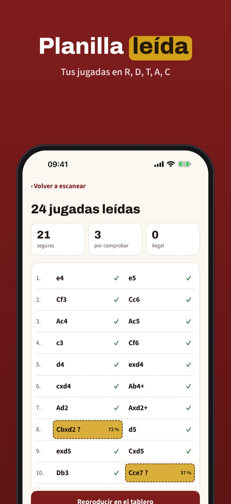
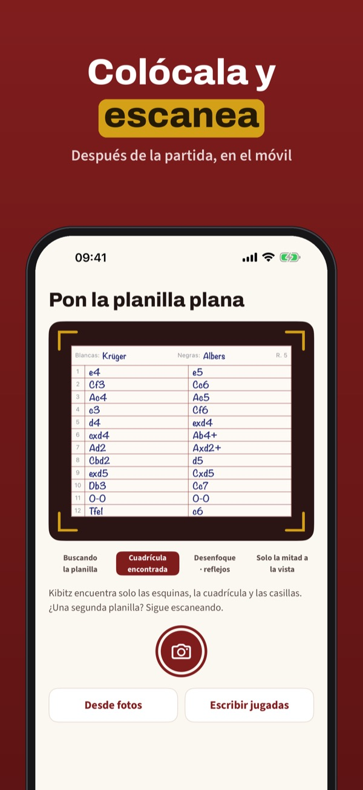
Kibitz te ahorra pasar tus partidas a mano. Después de la partida, fotografía la planilla y Kibitz lee tus jugadas en el móvil, con R, D, T, A y C, tal como las escribes.
Tres planillas al mes con lectura, comprobación, reproducción y PGN se usan sin compra. Kibitz Plus es una compra única: planillas sin límite, archivo, torneos, estadísticas y PDF. Sin suscripción.
Kibitz está pensado para después de la partida y no ofrece análisis ni sugerencias de jugadas. La lectura de la letra puede fallar: revisa las jugadas marcadas.
Terms of Use (EULA): https://www.apple.com/legal/internet-services/itunes/dev/stdeula/
Privacy: https://apps.baytech.nl/kibitz-eu/
La partita scritta in PGN
Dopo la partita fotografa il tuo formulario: Kibitz legge le mosse scritte a mano nella tua notazione, controlla ogni mossa sulla scacchiera e crea un PGN.
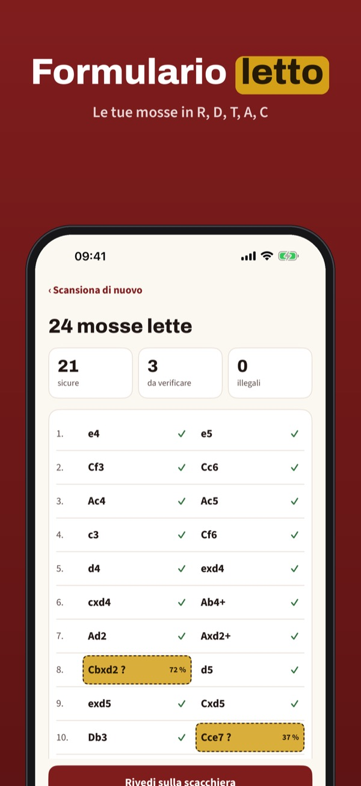
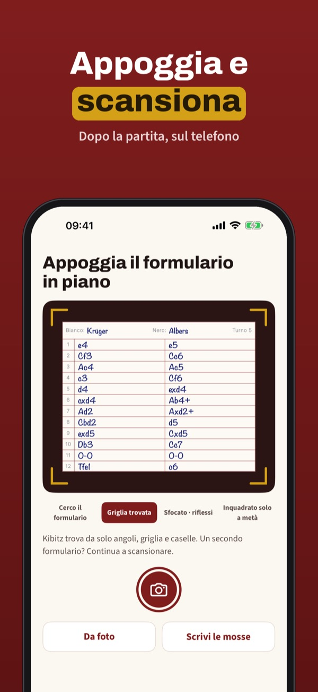
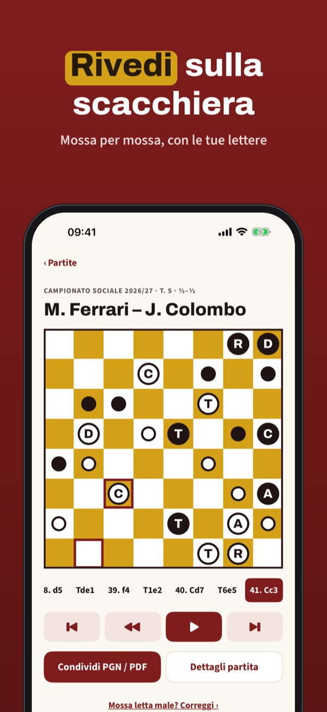
Kibitz ti evita di ricopiare le partite. Dopo la partita fotografa il formulario e Kibitz legge le tue mosse sul telefono, con R, D, T, A e C, come le scrivi tu.
Tre formulari al mese con lettura, controllo, revisione e PGN si usano senza acquisto. Kibitz Plus è un acquisto unico: formulari illimitati, archivio, tornei, statistiche e PDF. Nessun abbonamento.
Kibitz è pensato per il dopo partita e non offre analisi né suggerimenti di mosse. La lettura della scrittura può sbagliare: controlla le mosse evidenziate.
Terms of Use (EULA): https://www.apple.com/legal/internet-services/itunes/dev/stdeula/
Privacy: https://apps.baytech.nl/kibitz-eu/
Blankiet partii do PGN
Po partii sfotografuj blankiet: Kibitz odczyta ręcznie zapisane posunięcia w Twojej notacji, sprawdzi każde posunięcie na szachownicy i zrobi z nich PGN.
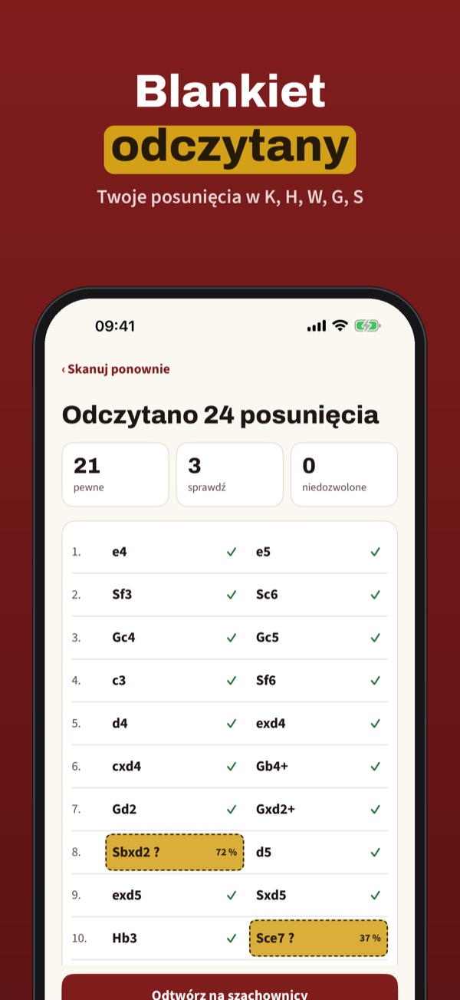
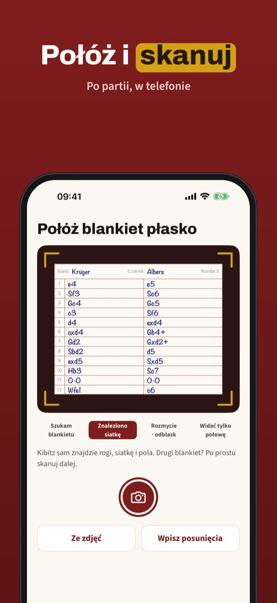
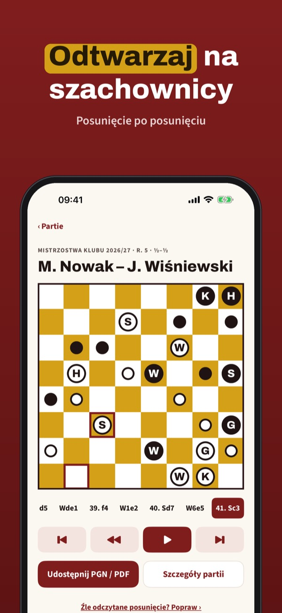
Kibitz oszczędza przepisywania partii. Po partii sfotografuj blankiet, a Kibitz odczyta Twoje posunięcia w telefonie – z K, H, W, G i S, tak jak piszesz.
Trzy blankiety miesięcznie z odczytem, sprawdzeniem, odtwarzaniem i PGN działają bez zakupu. Kibitz Plus to jednorazowy zakup: bez limitu blankietów, archiwum, turnieje, statystyki i PDF. Bez subskrypcji.
Kibitz jest przeznaczony na czas po partii i nie oferuje analizy ani podpowiedzi posunięć. Odczyt pisma może się pomylić – sprawdź oznaczone posunięcia.
Terms of Use (EULA): https://www.apple.com/legal/internet-services/itunes/dev/stdeula/
Privacy: https://apps.baytech.nl/kibitz-eu/
Partiář z papíru do PGN
Po partii vyfoťte partiář: Kibitz přečte ručně psané tahy ve vaší notaci, každý tah ověří na šachovnici a vytvoří z nich PGN.
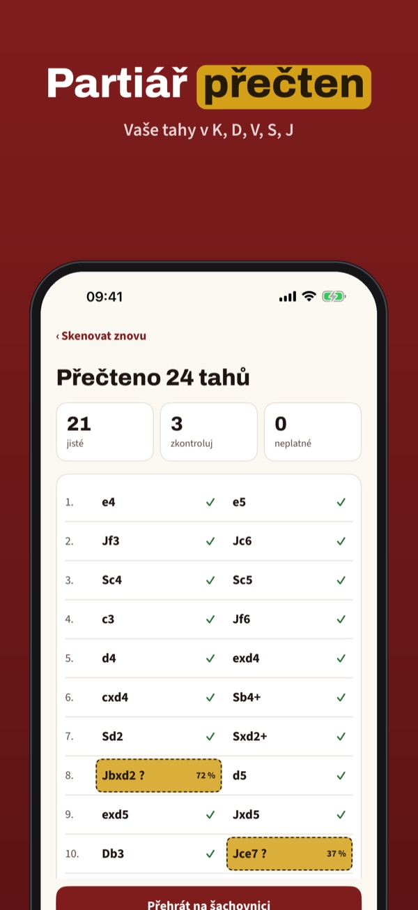
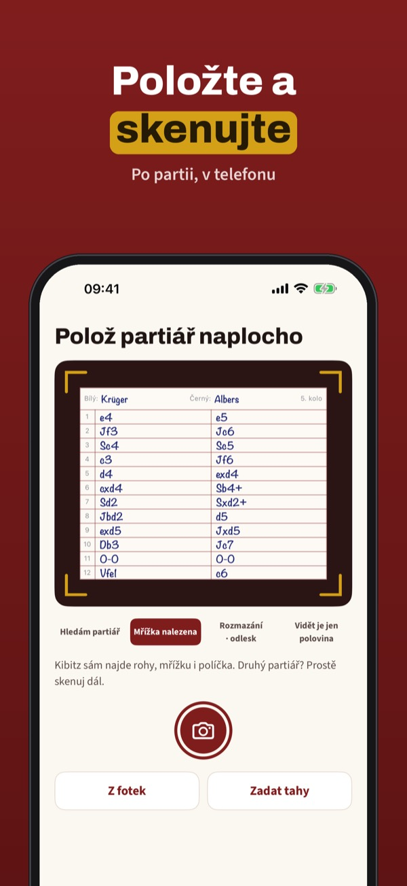
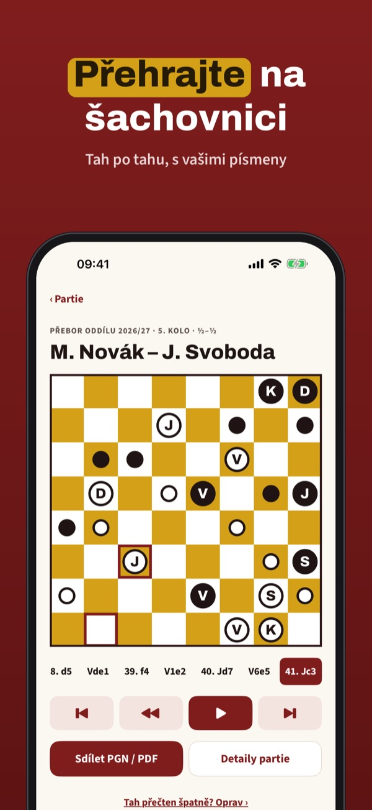
Kibitz vás ušetří přepisování partií. Po partii vyfoťte partiář a Kibitz přečte vaše tahy v telefonu – s K, D, V, S a J, tak jak píšete.
Tři partiáře měsíčně se čtením, kontrolou, přehráním a PGN fungují bez nákupu. Kibitz Plus je jednorázový nákup: neomezeně partiářů, archiv, turnaje, statistiky a PDF. Bez předplatného.
Kibitz je určen pro dobu po partii a nenabízí analýzu ani návrhy tahů. Čtení rukopisu se může splést – zkontrolujte označené tahy. Rozpoznávání rukopisu závisí na zařízení.
Terms of Use (EULA): https://www.apple.com/legal/internet-services/itunes/dev/stdeula/
Privacy: https://apps.baytech.nl/kibitz-eu/
Protokollet blir PGN
Fotografera ditt protokoll efter partiet: Kibitz läser de handskrivna dragen i din notation, kontrollerar varje drag på brädet och gör en PGN av dem.
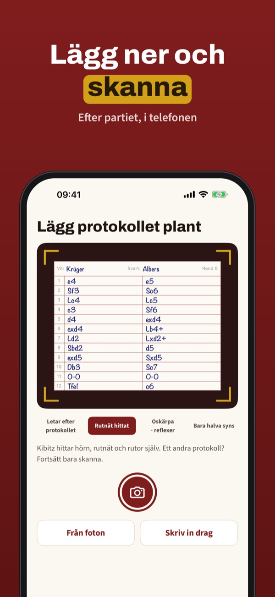
Kibitz sparar dig från att skriva av dina partier. Fotografera protokollet efter partiet så läser Kibitz dina drag i telefonen – med K, D, T, L och S, som du skriver.
Tre protokoll per månad med läsning, kontroll, uppspelning och PGN fungerar utan köp. Kibitz Plus är ett engångsköp: obegränsat antal protokoll, arkiv, turneringar, statistik och PDF. Ingen prenumeration.
Kibitz är gjort för tiden efter partiet och ger ingen analys och inga dragförslag. Läsning av handskrift kan bli fel – kontrollera de markerade dragen.
Terms of Use (EULA): https://www.apple.com/legal/internet-services/itunes/dev/stdeula/
Privacy: https://apps.baytech.nl/kibitz-eu/